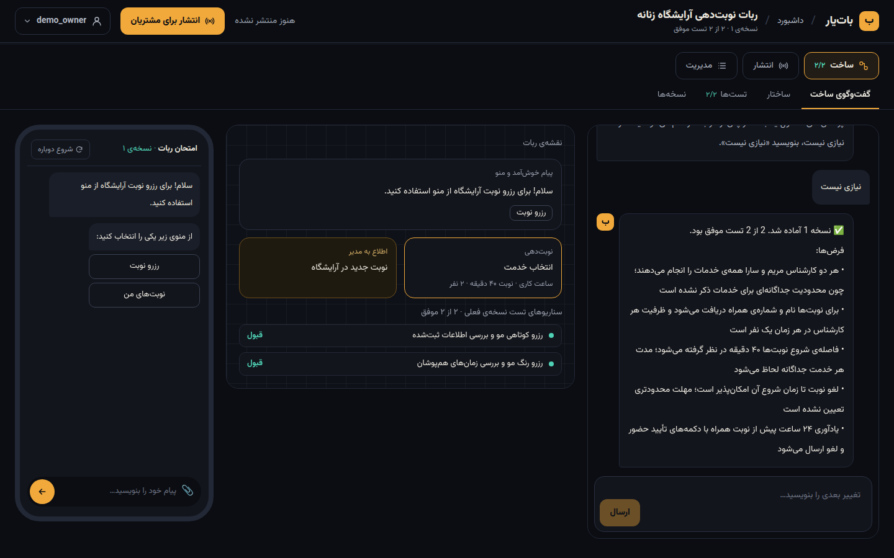
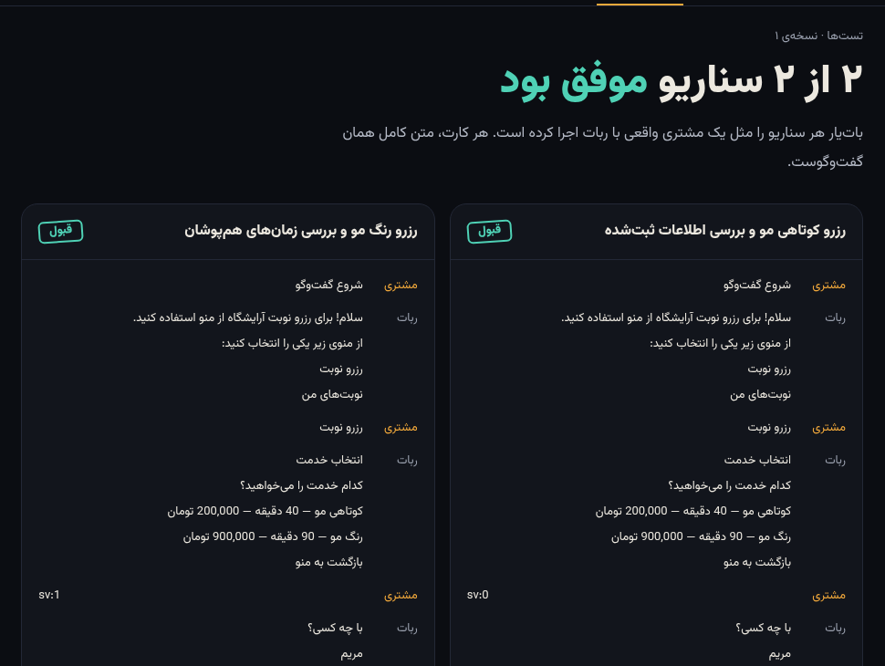
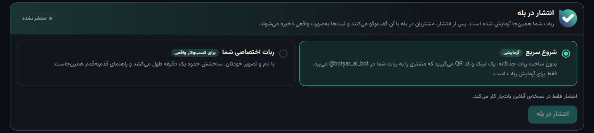
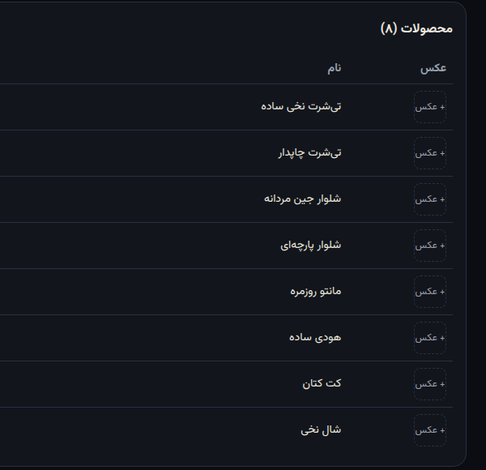
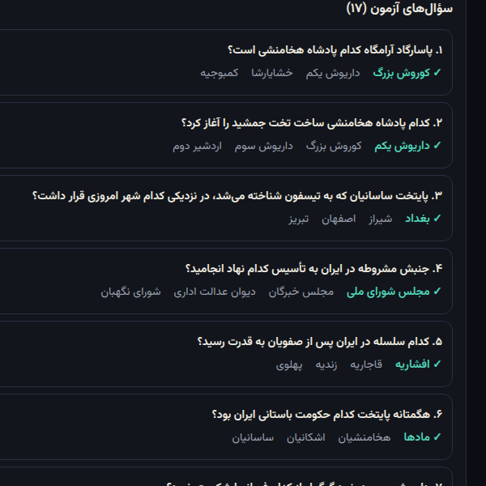
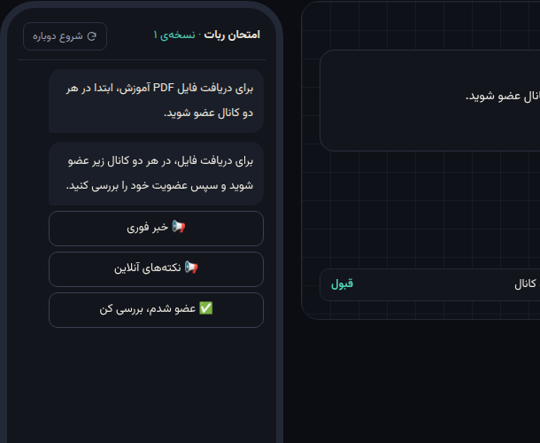

ایجنتی که ربات بله و تلگرام کسبوکارها را از روی توضیح فارسی میسازد، پیش از انتشار مثل یک مشتری واقعی تستش میکند و هر تغییر را با یک جمله، با نمایش تفاوت و تست دوباره، اعمال میکند.
۲ تا ۸ میلیون تومان برای ربات ساده، ۱۲ تا ۳۰ میلیون برای فروشگاه؛ هفتهها انتظار؛ هر تغییر کوچک دوباره هزینه و صبر.
باید بلوک و افزونه یاد بگیری؛ بعضی ابزارها صورتحساب را به ازای هر قابلیت در روز و هر پیام حساب میکنند. صاحب کافه وقتش را ندارد.
ربات پیش از رسیدن به مشتری واقعاً درست کار میکند یا نه. خطای یک ظرفیت یا قیمت را مشتری میفهمد، نه صاحب کسبوکار.
کاربر فعال ماهانهٔ بله (اردیبهشت ۱۴۰۲، وزارت ارتباطات)
کاربر ثبتشدهٔ بله؛ تلگرام هم از طریق رله پشتیبانی میشود
هزینهٔ اندازهگیریشدهٔ ساخت یک ربات؛ ساخت ۱۲ تا ۴۵ ثانیه
مدلهای زبانی امروز میتوانند از یک توضیح فارسی ساختاری دقیق و اعتبارسنجیشده بسازند و برایش تست بنویسند؛ این با این هزینه تا همین اواخر ممکن نبود.
کسبوکارهای نوبتمحور و سفارشمحور: کلینیک، آرایشگاه، کافه، آموزشگاه، باشگاه، فروشگاههای کوچک و صاحبان کانال. شمار دقیقشان را نداریم و حدس نمیزنیم.
خروجی ایجنت یک ساختار اعتبارسنجیشده است که یک موتور ثابت اجرا میکند؛ پس ربات قابلبررسی، قابلتست و امن است.
پاسخها همیشه یکساناند، کسی نمیتواند ربات را «گول بزند» و هر پیام مشتری هزینهٔ هوش مصنوعی ندارد.



ربات مشترک باتیار: لینک و QR فوری، بدون ساختن ربات جداگانه.
با نام و تصویر خود کسبوکار؛ راهنمای سهمرحلهای BotFather و انتقال بدون از دست رفتن داده.
ثبتها، پیامها، اطلاعیه، مشتریها و خروجی Excel.



| باتیار | سازندهٔ بصری (صورتحساب مصرفی) | سازندهٔ دکمهای (پلن ثابت) | برنامهنویس | |
|---|---|---|---|---|
| ساخت | توضیح فارسی | بلوک و افزونه | تنظیم منو | شرح نیاز، انتظار |
| تست پیش از انتشار | خودکار و اجباری | ندیدیم | بررسی نکردیم | دستی |
| قیمت | پلن ثابت ماهانه (پیشنهادی) | حدود ۱۵۰–۲۳۵ هزار تومان در ماه (نمونههای خودشان) | ۱۸۳ / ۲۸۷ / ۶۰۹ هزار تومان | ۲–۳۰ میلیون یکباره |
| مشتری با مدل زبانی؟ | هرگز؛ ایمن و بیهزینه | — | — | — |
| تغییر | یک جمله + تفاوت + تست دوباره | ویرایش بلوکها | ویرایش منو | یک سفارش تازه |
| پلن | قیمت (تومان/ماه) | تعداد ربات | مشتری فعال هر ربات | درخواست ایجنت |
|---|---|---|---|---|
| رایگان | ۰ | ۳ ربات · ۱ زنده | ۱۰۰ | ۳۰ |
| پایه | ۱۴۹٬۰۰۰ | ۳ ربات · ۱ زنده | ۵۰۰ | ۱۰۰ |
| حرفهای | ۳۴۹٬۰۰۰ | ۱۰ ربات · ۳ زنده | ۳٬۰۰۰ | ۳۰۰ |
| سازمانی (آژانسها) | ۱٬۴۹۰٬۰۰۰ | ۵۰ ربات · ۱۰ زنده | ۳٬۰۰۰ | ۱٬۵۰۰ |
≈ ۰٫۰۰۲ دلار برای هر ساخت؛ حداکثر ≈ ۰٫۹۰ دلار در ماه برای پلن پایه اگر کل سقف مصرف شود. پیام مشتری هزینهٔ AI ندارد.
حدود ۷ حساب پلن پایه آن را میپوشاند (قیمت فهرست لیارا، تقریبی).
پرداخت مستقیم به کیف پول خود صاحب کسبوکار میرود.
۳ تا ۵ کسبوکار واقعی (کلینیک، کافه، آرایشگاه)؛ هدف: ربات منتشرشده با ≥۱۰ مشتری واقعی در هفتهٔ اول.
پلن رایگان روی ربات مشترک؛ فهرست کسبوکارها مشتری میآورد؛ ارتقا برای ربات اختصاصی و سقف بالاتر.
ویدیوهای «ربات در ۳ دقیقه» برای هر صنف با قالب آماده؛ همکاری با اتحادیهها.
فریلنسرها همین حالا ربات میلیونی میفروشند؛ پلن سازمانی کارشان را چند برابر سریع میکند.
صاحبان کانال با «عضویت اجباری و ارسال محتوا» و «لینک دعوت» برای رشد کانالشان ابزار میگیرند؛ آنها خودشان در بله فعالاند و کمهزینهترین مشتری برای جذباند.
تست خودکار (بدون شبکه و بدون هزینه)
سناریوی ارزیابی ایجنت با مدل واقعی
عملیات API با مجوزدهی تستشده
روز از صفر تا نسخهٔ آنلاین
مهدی عباسی، بنیانگذار: ایجنت، موتور، رابط، استقرار و آزمون را در ۶ روز ساخته است (حدود صد کامیت)؛ تخصص در Python، رباتهای پیامرسان و React.
یک همبنیانگذار برای فروش و ارتباط با کسبوکارها، یک مهندس زیرساخت، و سرمایه برای پایلوت صنفی، درگاه پرداخت، چندنمونهای کردن و محتوای آموزشی.
هفتهٔ ۱: ۳ تا ۵ پایلوت ← هفتهٔ ۲–۴: آزمون میدانی و رفع اشکال روی بله و تلگرام + درگاه پرداخت اشتراک ← ماه ۲: قالبهای صنفی و برنامهٔ آژانسها ← ماه ۳: ۵۰ حساب پولی.
امتحانش کن: botyar.liara.run
ربات مشترک بله: @botyar_ai_bot